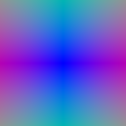
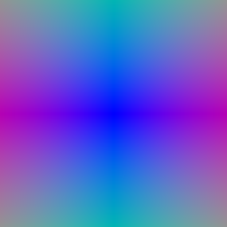
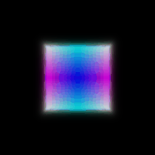
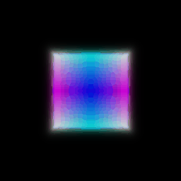
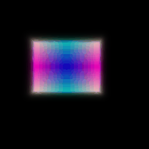

**HARSHAL SHIRSATH**
119247419, shirsath@umd.edu
CMSC 848F-Assigment 3
RENDERING BASICS WITH PYTORCH3D
CMSC 848F- Assignment 3
=====================================================================
s
1. Differentiable Volume Rendering
-----------------------------------------------------------------
1.3. Ray sampling
--------------------------------------------------------------------
Visualization
 
------------------------------------------------------------------
1.4. Point sampling
Visualization

------------------------------------------------------------------
1.4. Point sampling
Visualization
 1.5 Volume Rendering
1.5 Volume Rendering
 
2. Optimizing a basic implicit volume
-----------------------------------------------------------------------------------------------
2.1. Random ray sampling

2. Optimizing a basic implicit volume
-----------------------------------------------------------------------------------------------
2.1. Random ray sampling
2.2. Loss and training
2.3. Visualization



3. Optimizing a Neural Radiance Field (NeRF)
-------------------------------------------------------------------------------------------